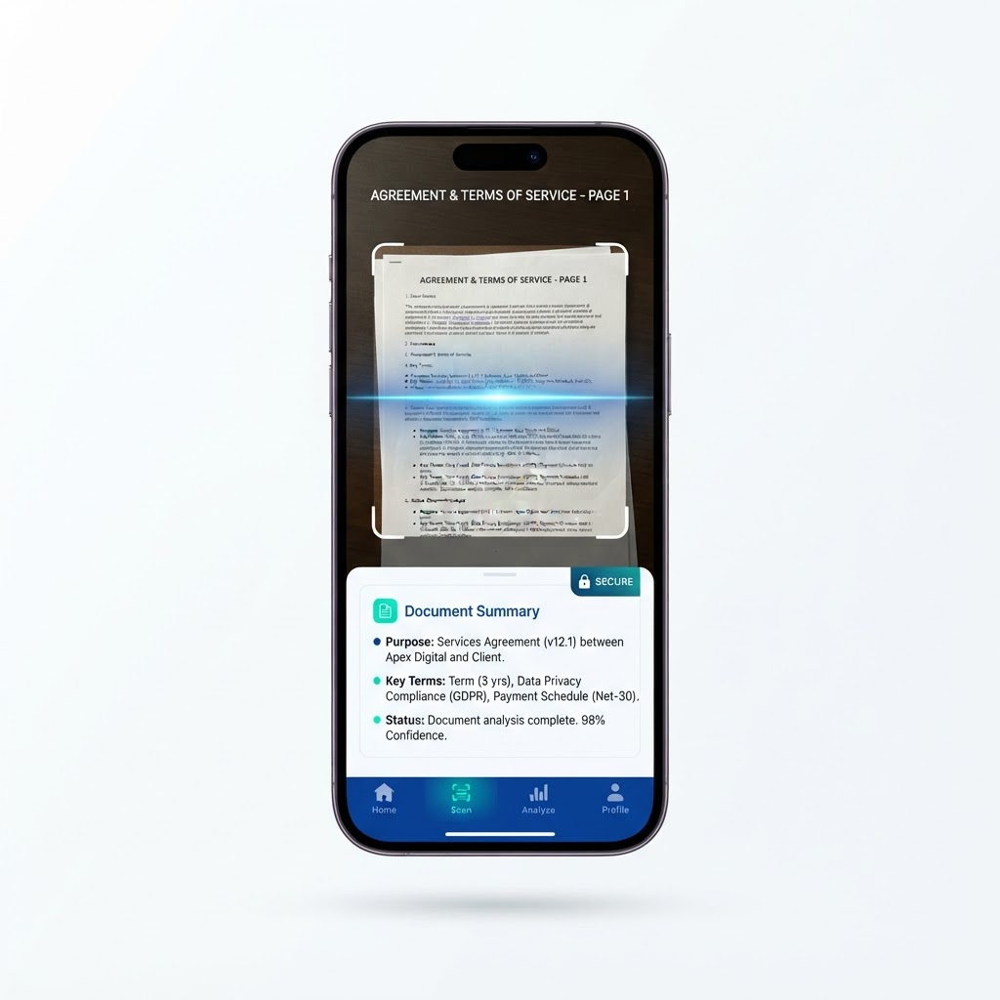

Local-First Security
Your documents are processed on-device for maximum privacy, then encrypted end-to-end with Supabase before they ever touch the cloud.
Scan, summarize, and secure multi-page legal documents and receipts using advanced AI, right from your phone.

Everything you need to capture and understand your most important documents, without compromising on privacy.
Your documents are processed on-device for maximum privacy, then encrypted end-to-end with Supabase before they ever touch the cloud.
Handle complex multi-page files with confidence. CivicDesk processes each page in sequence, so large documents summarize cleanly without crashing.
A secure on device PIN makes sure no one without knowing your PIN can access your sensitive information on CivicDesk.